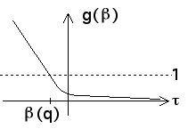

| To see that for each q the equation (p1q)(r1β(q)) + ...
+ (pNq)(rNβ(q)) = 1 determines a unique value of β(q),
for each q define a function g(β) by |
| g(β) = (p1q)(r1β) + ...
+ (pNq)(rNβ) |
| Certainly, g(β) is a continuous function. |
| Recall that 0 < ri < 1 and 0 < pi < 1 for all i. Then |
| as β → ∞, each riβ → 0, and so g(β) → 0, |
| as β → -∞, each riβ → ∞, and so g(β) → ∞, and |
| finally, dg/dβ = (p1q)(r1βln(r1)) + ...
+ (pNq)(rNβln(rN)) < 0
because each ln(ri) < 0. |
|
| Combining these three observations, we see the graph of g(β) must look something like this |
|  |
| That is, g(β) decreases from large positive values to nearly 0, so g(β) = 1 for exactly one value of β,
and this is β(q) for the given value of q. |
| |
| If all the ri take on a common value, r, the equation |
| (p1q)(r1β(q)) + ...
+ (pNq)(rNβ(q)) = 1 |
| can be solved for β(q): |
| β(q) = -ln(p1q + ... + pNq)/ln(r). |